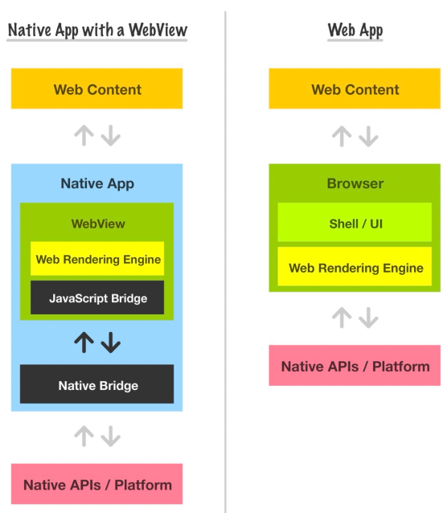
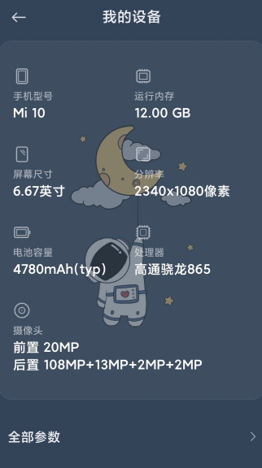
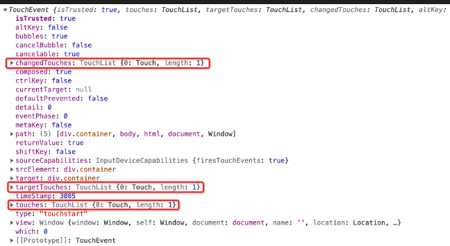

webView 和 webApp
webApp：不能够调用系统原生的接口，因为本质就是一个浏览器的网页
WebApp 其实就是移动端的网站或 H5 应用，说白了就是运行在移动端浏览器上的网站应用。
因为 SPA 开发模式的出现，整个网页只有一个页面，所以给人的感觉像是一个应用一样，从而出现了 WebApp 的说法。另外由于现在开发一个 Web 网站一般都使用 HTML5、CSS3 等新的技术，因此 WebApp 又被称之为 H5 应用。
最大缺点：无法调用原生 api
webView：是一种在应用程序内打开的网页，比如抖音扫码跳出一个网页，这个页面可以跟原生系统接口交互
WebView 就是浏览器引擎部分，你可以像插入 iframe 一样将 Webview 插入到你的原生应用中，并且编程化的告诉它将会加载什么网页内容。这样我们可以用它来作为我们原生 app 的视觉部分。当你使用原生应用时，WebView 可能只是被隐藏在普通的原生 UI 元素中，你甚至用不到注意到它。

Hybrid App：一整个 app 就是一个 webview，开发的时候用 webapp，就是为了能够会系统进行交互；用这种方式开发就可以不使用 xcode 和 Android studio
适配
设备像素（物理像素）
设备像素就是指实际存在的像素。

这表示在设备屏幕的水平方向上有 2340 个像素点，垂直方向上有 1080 个像素点（纵横比）
屏幕尺寸（英寸）
1 英寸等于 2.54 厘米（cm）
手机的英寸指的是对角线的长度
像素密度（PPI）
像素密度就是指 1 英寸下的设备像素数量
计算
// 屏幕斜边的像素
const margin = Math.sqrt(Math.pow(1080, 2) + Math.pow(1920, 2));
console.log(margin); // 2202.9071700822983
console.log(margin / 5.5); // 400.52857637859967 PPI
CSS 像素（设备独立像素、逻辑像素）
代码里面书写的像素
像素比（DPR）
DPR = 设备像素 / CSS 像素。
视口与 meta
这句话是设置视口，宽度是设备的宽度，缩放比为 1
<meta name="viewport" content="width=device-width, initial-scale=1.0">
不写这句话，视口默认宽度 980px
| 属性名 | 作用 |
|---|---|
| width | 设置 layout viewport 的宽度，为一个正整数，或字符串”device-width” |
| height | 设置 layout viewport 的高度，这个属性对我们并不重要，很少使用 |
| initial-scale | 设置页面的初始缩放值，为一个数字，可以带小数 |
| minimum-scale | 允许用户的最小缩放值，为一个数字，可以带小数 |
| maximum-scale | 允许用户的最大缩放值，为一个数字，可以带小数 |
| user-scalable | 是否允许用户进行缩放，值为”no”或”yes”, no 代表不允许，yes 代表允许 |
适配方案
百分比
宽度，高度等单位使用百分比，这种方案往往需要配合其他适配方案一起使用。
设置缩放
以标准的 375px 来开发，设置缩放
设置 initial-scale 属性
(function () {
//获取css像素（viewport没有缩放）
var curWidth = document.documentElement.clientWidth;
console.log(curWidth);
var targetWidth = 375;
var scale = curWidth / targetWidth;
console.log(scale);
var view = document.getElementById("view");
console.log(view.content);
view.content =
"initial-scale=" +
scale +
",user-scalable=no,minimum-scale=" +
scale +
",maximum-scale=" +
scale +
"";
})();
缺点：
1.就像在 viewport 设置宽度的时候，可以把宽度设置成一个固定值一样，会出现所有的手机看上去都是同样的大小，没有分别了，不太好，厂商特意做出各种大小的手机，还要弄成一样，那人家买大屏机有什么意义
2.算出的的值在一些有小数的情况下可能会出现误差（无关紧要），因为设备独立像素不能有小数
3.对设计稿的测量存在问题
修改 dpr（不使用）
修改 css 像素和物理像素为 1:1 的关系
var scale = 1 / window.devicePixelRatio;
meta.content = 'width=device-width,initial-scale=' + scale + ',user-scalable=no,minimum-scale=' + scale + ',maximum-scale=' + scale + '';
rem
原理：类似栅格化布局，给出一列的宽度为根元素的 font-size,然后后续都以 rem 尺度进行计算
clientWidth:document.documentElement.clientWidth（屏幕宽度）
desginWidth:设计稿宽度
html.style.fontSize = 100 * (clientWidth（屏幕宽度） / designWidth（设计稿宽度）) + 'px';
到时候使用的时候，比如设计稿是 30px，那么就写 0.3rem，因为 rem 单位已经经过了计算
vw,vh,vmin,vmax
vw 是 Viewport’s width 的简写，1vw 等于 window.innerWidth 的 1%
vh 和 vw 类似，是 Viewport’s height 的简写，1vh 等于 window.innerHeihgt 的 1%
vmin 的值是当前 vw 和 vh 中较小的值
vmax 的值是当前 vw 和 vh 中较大的值
都是作为单位使用
设配与响应式
设配(自适应)：移动端的网页在不同的设备下看上去都是正常的。
响应式：一套代码能够在不同的设备下有着不一样的表现。
缺点：
代码冗余，有一些东西是特定 PC 端有，有一些东西是特定手机端有，但是因为是一套代码，因此无论是 PC 端还是手机平板端，这些代码都会有
移动端和 PC 端还是有一定的差异性，比如移动端可以两根手指放大页面，而这个在 PC 端是没有的，随着移动端的代码和 PC 端差异越大，使用一套代码就会越感到力不从心
媒体查询使用注意：
网页宽度自动调整
尽量少使用绝对宽度
字体的大小使用相对单位（rem、em）
布局尽量使用流式布局(flex)
移动端事件
事件
touchstart：手指按下事件，类似 mousedown
touchmove：手指移动事件，类似 mousemove
touchend 手指抬起事件，类似 mouseup
box.addEventListener('touchstart', (e) => {
console.log(e);
});
这个 e(事件对象)中有三个对象，都是表示手指列表

changedTouches、targetTouches、touches 这 3 个对应的值都是 TouchList（手指列表）
changedTouches：触发当前事件的手指列表，也就是涉及当前（引发）事件的触摸点的列表
targetTouches：位于当前 DOM 元素上的手指列表，也就是当前对象上所有触摸点的列表
touches：位于当前屏幕上的所有手指列表（必需至少有 1 个手指在添加触发事件的元素上），也就是当前屏幕上所有触摸点的列表
移动端事件和 PC 端事件之间的区别
300ms 延迟
现在只要设置了 viewpoint 就不会有这个问题
触发点区别
PC 端
mousemove：不需要鼠标按下，但是必需在元素上才能触发
mouseup：必需在元素上抬起才能触发
移动端
touchmove：必需手指按下才能触发，但是，按下后不在元素上也能触发
touchend：不需要在元素上抬起就能触发
触发顺序
触发顺序依次为：touchstart → touchend → mousedown → click → mouseup
并且 PC 的事件在移动端里会有 300ms 左右 延迟
touchstart 与 click 的区别
touchstart 为手指碰到元素就触发，click 为手指碰到元素并且抬起才会触发
移动端事件穿透
这是因为在移动端浏览器，事件执行的顺序是 touchstart → touchmove → touched → click。而 click 事件有 300ms 的延迟，当 touchstart 事件把上层元素隐藏之后，隔了 300ms，浏览器触发了 click 事件，但是此时上层元素不见了，所以该事件被派发到了下层元素身上。
阻止默认事件可解决
box.addEventListener('touchstart', ev => {
box.style.display = 'none';
ev.preventDefault(); // 取消事件的默认动作
});
阻止默认行为可能会导致有些事件不可用，所以需要自己去开发这些功能
比如
a 标签无法跳转
dom.addEventListener('touchstart',e=>{
location.href = e.target.href;
})
手动滚动
var wrap = document.querySelector("#wrap"); // 外层的 div
var list = document.querySelector("#list");; // 里面的 ul
var startPointY = 0, // 手指按下时的 Y 坐标
startTop = 0, // 要滑动的元素默认的 top 值
movePointY = 0; // 手指移动时的坐标
// 这里我们用到了腾讯的第三方库 transform，通过 Transform(DOM节点) 进行一个初始化
// 之后我们就可以非常方便的获取以及设置该 DOM 节点和 transform 相关的属性值
Transform(list);
console.log(list.translateY);
wrap.addEventListener('touchstart', ev => {
startPointY = ev.changedTouches[0].pageY; // 手指按下时的坐标
startTop = list.translateY; // list 元素垂直轴移动的距离
})
wrap.addEventListener('touchmove', ev=>{
// 坐标移动的距离 = 当前的距离 - 按下时的距离
movePointY = ev.changedTouches[0].pageY - startPointY;
// 元素移动的距离 = 按下时元素的 top + 坐标移动的距离
list.translateY = startTop + movePointY;
})
document.addEventListener('touchstart',ev=>{
ev.preventDefault();
}, {
passive : false
})
手写轮播图
// 获取一些 DOM 节点
var banner = document.querySelector("#banner"); // 最外层容器
var wrap = document.querySelector(".wrap"); // 轮播图图片容器
var spans = document.querySelectorAll(".circle span"); // 获取所用的小圆点
// 初始化一些变量
var imgWidth = banner.offsetWidth; // 一张图片的宽度
var startPointX = 0; // 手指按下时的坐标
var disPointX = 0; // 手指移动的距离
var startEleX = 0; // 按下时元素的位置
var cn = 0; // 当前图片的索引值
var ln = 0; // 上一个图片的索引值
Transform(wrap);
// 因为要实现的是无缝滚动，所以需要复制一份图片在后面
wrap.innerHTML += wrap.innerHTML; // 复制了一份
wrap.style.width = wrap.children.length * imgWidth + "px";
// 手指按下的时候要做的事情
banner.addEventListener("touchstart", ev => {
startPointX = ev.changedTouches[0].pageX; // 记录手指按下去的时候的 X 坐标
// 需要判断当前是第几张图，如果是第一张或者是最后一张，那么我们是要做特殊处理的
// 因为我们并不知道用户是往左边还是右边，所以我们针对第一张和最后一张直接进行跳转
if(cn === 0){
cn = wrap.children.length / 2;
}
if(cn === wrap.children.length - 1){
cn = wrap.children.length / 2 - 1;
}
wrap.style.transition = ""; // 去除 wrap 的过渡，否则一会儿拖动的时候就会因为过渡感觉慢半拍
// 因为现在图片的下标已经更新了，所以我们需要根据新的下标修正 wrap 的 translate 移动距离
wrap.translateX = - imgWidth * cn;
// 还需要更新一下元素的移动距离
startEleX = wrap.translateX;
ev.preventDefault();
});
// 手指移动的时候要做的事情
banner.addEventListener("touchmove", ev => {
disPointX = ev.changedTouches[0].pageX - startPointX; // 获取手指移动的距离
wrap.translateX = startEleX + disPointX;
});
// 手指抬起的时候要做的事情
banner.addEventListener("touchend", ev => {
// 当用户手指抬起的时候，需要判断要不要切换图片
// 这个就根据用户手指移动的距离，如果用户手指移动的距离很短，我们就回弹图片
// 我们将整个图片宽度分为 8 份，如果用户手指移动的距离大于八分之一，我们就切换，否则我们就回弹
var backWidth = imgWidth / 8;
if(Math.abs(disPointX) > backWidth){
// 大于八分之一，那我们就切换图片
// 分为往左还是往右
if(disPointX < 0){
// 往左边拖，想看下一张图片
cn++
}
if(disPointX > 0){
// 往右边拖，想看上一张图片
cn--;
}
}
// 至此，图片的下标已经更新
wrap.style.transition = ".3s";
wrap.translateX = - imgWidth * cn;
// 最后一个事情，就是更新小圆点
// 这里还是根据图片的下标来做
// 首先去除上一次圆点身上的 class
spans[ln].className = "";
// 给当前的下标添加上 class
// 图片当前的索引：0 1 2 3 4 5 ==> 0 1 2 0 1 2
spans[cn % (wrap.children.length / 2)].className = "active";
// 更新上一个索引
ln = cn % (wrap.children.length / 2)
})
第三方库
swiper.js 轮播图库
hammer.js 手势库（各种操作监听）
zepto.js 类似于移动端的 jq
cropper.js 裁剪库
常见 API
调用摄像头
navigator.mediaDevices.getUserMedia(myConstraints).then(
(stream) => {
video.srcObject = stream;
//播放视频
video.play();
// 关闭摄像
btn2.onclick = function () {
stream.getTracks().forEach((track) => track.stop());
};
},
(error) => {
console.error(error.name || error);
}
);
上拉刷新与下拉加载更多
可用 swiper 的库
var mySwiper = new Swiper(".swiper-container", {
direction: "vertical",
scrollbar: ".swiper-scrollbar",
slidesPerView: "auto",
mousewheelControl: true,
freeMode: true,
// 用户在整个轮播图上面滑动时
onTouchMove: function () {
if (mySwiper.translate < 50 && mySwiper.translate > 0) {
$(".init-loading").html("下拉刷新...").show();
} else if (mySwiper.translate > 50) {
$(".init-loading").html("释放刷新...").show();
}
},
// 滑动结束时
onTouchEnd: function () {
var _viewHeight =
document.getElementsByClassName("swiper-wrapper")[0].offsetHeight;
var _contentHeight =
document.getElementsByClassName("swiper-slide")[0].offsetHeight;
// 根据滑动的距离判断是刷新还是加载
// 上拉加载
if (
mySwiper.translate <= _viewHeight - _contentHeight - 100 &&
mySwiper.translate < 0
) {
if (loadFlag) {
$(".loadtip").html("正在加载...");
// 模仿异步加载数据
setTimeout(function () {
for (var i = 0; i < 5; i++) {
oi++;
$(".list-group")
.eq(mySwiper2.activeIndex)
.append(
'<li class="list-group-item">我是加载出来的' + oi + "...</li>"
);
}
$(".loadtip").html("上拉加载更多...");
mySwiper.update(); // 重新计算高度;
// 上拉加载到一定数据则不能再加载
if (oi >= 20) {
loadFlag = false;
}
}, 800);
} else {
$(".loadtip").html("没有更多啦！");
}
}
// 下拉刷新
if (mySwiper.translate >= 50) {
$(".init-loading").html("正在刷新...").show();
$(".loadtip").html("上拉加载更多");
// 模仿异步加载数据
setTimeout(function () {
$(".refreshtip").show();
$(".init-loading").html("刷新成功！");
if (oj <= 5) {
for (var i = 0; i < 5; i++) {
oj++;
$(".list-group")
.eq(mySwiper2.activeIndex)
.prepend(
'<li class="list-group-item">我是新增数据' + oj + "...</li>"
);
}
}
setTimeout(function () {
$(".init-loading").html("").hide();
}, 800);
$(".loadtip").show();
//刷新操作
mySwiper.update(); // 重新计算高度;
}, 1000);
} else if (mySwiper.translate >= 0 && mySwiper.translate < 50) {
$(".init-loading").html("").hide();
}
return false;
},
});
本地配置 https
使用 mkcert
重力加速度
const box = document.querySelector(".box");
window.addEventListener("devicemotion", (ev) => {
//console.log(ev);
let motion = ev.acceleration;
box.innerHTML = `
x:${motion.x}<br>
y:${motion.y}<br>
z:${motion.z}<br>`;
});
横竖屏变化
if (window.ScreenOrientation) {
alert("OK");
} else {
alert("No");
}
window.addEventListener("deviceorientation", (ev) => {
box.innerHTML = `
z轴偏移的度数为：${ev.alpha.toFixed(2)}<br>
x轴偏移的度数为：${ev.beta.toFixed(2)}<br>
y轴偏移的度数为：${ev.gamma.toFixed(2)}<br>
`;
});